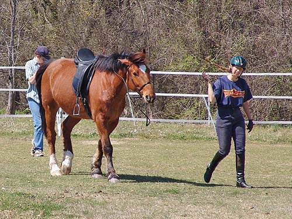
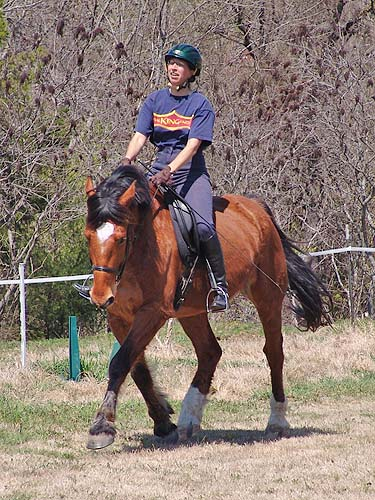
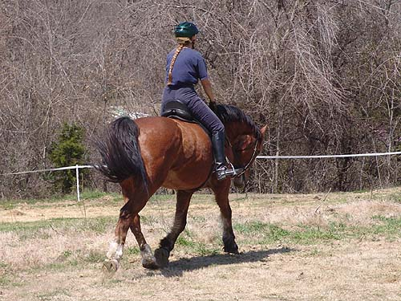

Schooling Dressage
on Bob Bob and I are thinking of doing some dressage
shows, so
it seemed like a good idea to throw on
the dressage saddle and
get a lesson. He was out hunting last
weekend, but I left him at home
this past Saturday (4 hours out, and tons
of running).
We had some awesome work today and I think
in a couple of
weeks we'll be ready for our First Level
debut.

Come on Bob, follow me out to
the arena....
We did some warm up, then went
to leg yielding and then shoulder in. For Bob, it helps to get him off
his front end.
My left leg works better.
But my right leg wasn't doing
too bad.
We started out a bit tipped
and on the forehand.
But he started letting me balance
him and started to lift his front end.
It took some work, but he gave
me a place to sit and it felt quite nice.
This was work for him, too.
But, it's the best work we've done yet (I guess fox hunting really does
help for strength).
I'm so excited to see if this
can transfer over to a show. I'm impressed, and my trainer seems happy,
but it'll be nice to hear a judges impression.
I know we're not steady, but I'd like
to see if we're getting there.
Here's some of our work on lengthen.
It's a little tough, because when I gave forward with my hands, his head
started going down.

Here we're lengthening again,
but I balanced my giving with a little bumping up. It's so difficult to
know how to tell the horse what you want. Bob easily does this stuff in
the field, but I have to figure out how to ask for it.

And our last lengthen. He was
getting tired, and his head was starting to go down. Still, he was game
to reach forward and give me more thrust from behind.